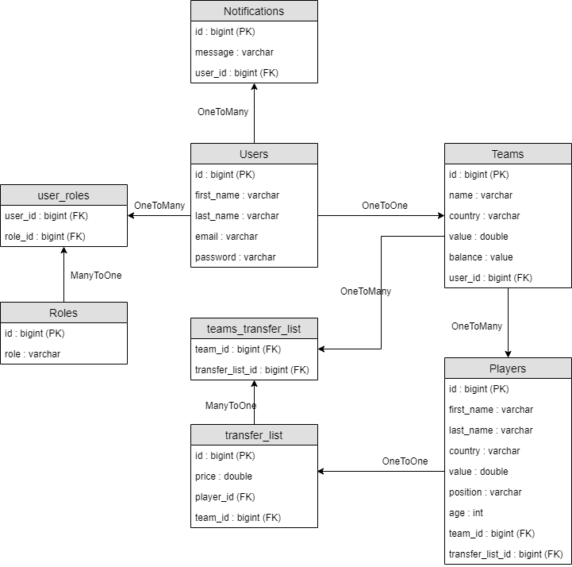

1. Abstract
In this report I have highlighted the stages of the current project development, its description, the technologies used and the challenges encountered. Finally, I presented some conclusions and future improvements for our application.
2. Introduction and objectives
TeamManager is composed by a REST API and a web application that offers the possibility to create a team, to manage players and to buy or sell players.
The endpoints offered by TeamManager backend can be consumed from the TeamManager client application or from any other client application.
3. Application Architecture
Application architecture is separated in two main components consisting of: the server application and the client application. In the image below we can visualize the main architecture.
The client web application communicates with the API usign HTTP requests. The API is also able to send messages to the client application via web sockets. Web sockets were use in order to send notifications and to update in real time the informations about teams.
3.1 Server
The REST API is written in Java using the Spring framework. In Java we do all the processing that the application requires. Technologies that were used: Spring Boot, Spring Security, JPA, Hibernate and Maven.
Maven is used in order to resolve all imports of dependecies required for the project.
Spring Boot was used to accelerate and facilitate back-end application development. Spring Security was used to restrict the access to the offered endpoint to the users that are not authenticated. There is an OpenAPI document that contains the main endpoints that can be found here.
Hibernate was used in order to map the existing entities to tables from database. JPA was used in order to persist and to retrieve entities from the database.
3.2 Client
The client web application is developed using Angular framework and runs on a NodeJS server.
The application is a Single-Page Applications which means that new page's content is served not from loading new HTML pages but generated dynamically through JavaScript's ability to manipulate the DOM elements on the existing page itself. The SPA approach allows the user to continue consuming and interacting with the page while new elements are being updated or fetched .
After login the token generated by the server is stored in sesion storage and is pased in the header of each request that is made to the server. HttpInterceptor was used to pass the token in the Authorization header.
4. Database architecture
Database contains eight tables as follow:

5. User guide
First step in using the application is to create a new account. This can be done accessing the Register link from the application header. After completing all the fields an account will be created. The email needs to be unique.

After this the user can login using the email and the password provided in the register form.

If a team wasn't created before you will be redirected to a form in which you can create a new team. A team formed by 20 players will be created and an initial value of 5,000,000$ will be put into your account.

Now you will be able to see your team. Players are shown sorted by their role. You can check information about the players such as name, country and value.

By clicking on the "Add to transfer list button" on a specific player you will be able to sell the player. You need to select a market value in the pop-up that will appear.

You can remove the player from transfer list by pushing the "Remove from transfer list" button or from the "Transfer list" view. On this view you will be able to see all the players that were added in order to be selled. You can sort players by any column.

In order to acquire new players you need to navigate to "Serch players" view. Here you can apply different filter for example: search for player name, country, team, value etc. When you find a player that you like you can click on the buy icon and the player will be transfered in your team. You need to have enough money in your balance in order to buy the player. The new player will be available in your "View team" view.

6. Conclusion
The project was developed using modern technologies and offers a complete solution for managing small soccer leagues.
Design of the web application can be improved in order to offer a more suitable interface for a application of such kind. Also new functionalities can be added such as a history of transactions that were made by a specific team, different statistics about the players evolution, most searched players etc.